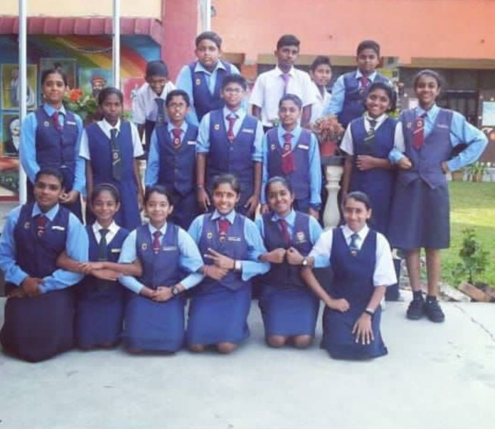

SJK(T) JALAN KHALIDI MUAR
- UPSR : 8A's
- Held the role of Head Prefect (Ketua Pengawas) in year 2016
- Actively participated in science fairs, writing and story-telling competitions

Portfolio 2026
A 22-year-old with a genuine curiosity for learning, exploring, and connecting.
Curious, empathetic, and thoughtfully human.
I’m from Muar, Johor, and a Yayasan Khazanah Watan Scholar who’s naturally curious about the world around me. I love travelling, hiking, and exploring new places, whether that’s a quiet trail, a new city, or something I’ve never tried before. When I’m slowing down, I’m usually listening to music or getting absorbed in a movie. I’m an empath at heart and a huge animal lover too, which is why I often carry dog and cat food with me—just in case I run into a stray who could use a little care.
Learning experiences that shaped my journey so far.
A few projects I’ve built, learned from, and improved.
A console-based C++ project that simulates the flow of luggage handling and retrieval at an airport. The system models how luggage is transferred from aircraft storage to passengers using core data structures such as stacks, queues, arrays, and vectors. It includes a time-based luggage reclaim process, automatic handling of uncollected luggage, and owner verification before release. Unclaimed luggage storage is organised using sorting techniques to efficiently manage available space, reinforcing practical applications of data structures and algorithms in a real-world scenario.
A child-friendly math learning app concept designed for primary school students (ages 6–10). I researched pain points in existing math apps through ethnographic observation and user analysis, then designed an interface that’s easier for kids to navigate—using clear difficulty labels (Easy/Medium/Hard), interactive task flows, and a simple progress tracker to keep learning motivating. The final deliverables include a structured HCI report (personas, task analysis, scenarios, design principles) and a high-fidelity prototype of key screens like onboarding, difficulty selection, exercises, and progress tracking.
A full-stack web project for a music festival that includes a public landing page and a role-based system for both users and administrators. Users can sign up, log in, purchase festival tickets by selecting ticket type and seating zone, and view their receipt and ticket details through a dashboard. Admins have their own login and dashboard to manage festival sub-events (name, date, time, place, organizer, and description). The project is backed by a MySQL database (users, admins, sub-events, and event registrations) and focuses on building a complete end-to-end web flow from authentication to data-driven pages.
REMinder is a mobile application focused on improving users’ sleep quality through sleep tracking, personalized sleep logging, and expert backed tips. The application helps users understand their sleep patterns, build healthier bedtime habits, and maintain consistent sleep routines. It includes features such as sleep duration calculation, sleep quality evaluation, sleep history tracking, and educational sleep improvement content with video support.
A mobile application concept designed to help users monitor and reduce their carbon footprint through daily activity tracking. The app allows users to log trips and activities, view carbon emission history, track monthly targets, complete sustainability missions, and compare progress through a leaderboard system. The overall goal is to promote environmentally conscious behavior through visualization, gamification, and progress insights.
SimpleStore is a web based CRUD application developed using the Laravel framework to manage products and their associated suppliers. The system implements a one to many relationship where each supplier can provide multiple products, while each product belongs to a single supplier. It allows users to create, view, update, and delete product and supplier records through a structured MVC architecture, complete with database migrations, Eloquent relationships, and RESTful routing. The application demonstrates strong backend fundamentals, clean data modeling, and practical use of Laravel artisan workflows.
A console based library management system developed using object oriented programming principles. The system manages different types of library items including books, magazines, and theses while supporting core operations such as item search, borrowing, returning, availability tracking, and fine calculation. The project demonstrates strong application of inheritance, abstraction, polymorphism, and encapsulation through a structured class hierarchy and real world simulation of library workflows.
A full stack web based bookstore management system developed using a modern MVC framework. The application supports secure user authentication, relational database design, and complete CRUD functionality for managing authors, books, and categories. It implements many to many relationships between entities, dynamic Blade templating, and a reporting dashboard that summarizes bookstore data such as total books, authors, and categories. The project demonstrates practical backend development skills combined with structured frontend navigation and data driven views.
Leadership, collaboration, and initiative.


Grouped with honest confidence indicators.